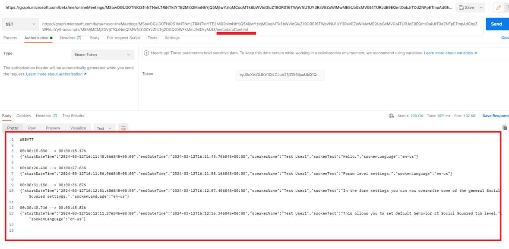

SPFx Online Meeting
Video Link: https://youtu.be/I7jA3uH_h1w
GitHub Repository: https://github.com/Ashot72/SPFx-Online-Meeting
This is an SPFx Personal Tab Online Meeting app. You can create a calendar-backed online meeting, join the meeting from the app, record it with transcriptions, and view them
on the page via HTML5 video with enabled captions. The app makes use of @fluentui/react-northstar https://fluentsite.z22.web.core.windows.net/0.66.2. Fluent UI provides extensible vanilla
JavaScript solutions to component state, styling, and accessibility.
Figure 1
We will mostly be involved in the Recordings and Transcripts Graph APIs.
Figure 2
Before proceeding, I want to inform you that when you record a meeting, Start transcription will be disabled by default, and we need to enable it.
Figure 3
You should navigate to Meeting Policies and click on the Global (Org-wide default) link.
Figure 4
What you need to do is enable the Transcription. It takes 24 hours to be enabled.
Figure 5
When you create an online meeting by clicking on the calendar, we actually create and enable an event as an online meeting.
Figure 6
Similarly, we delete an event from the calendar.
We will explore the recordings and transcripts API via the Graph Explorer and Postman.
Figure 7
Let's click on the Social Squared event on the calendar and then View Meetings.
When we have created the Social Squared calendar-backed online meeting, we receive the meeting join url.
Figure 8
Based on the URL we need to get the meeting Id.
Figure 9
We run the query with the required permissions and get the meeting Id.
Figure 10
After obtaining the meeting Id, we attempt to retrieve the recordings of that meeting. Note that a meeting can have multiple recordings, as in the case of Social Squared (e.g., part one and part two).
Figure 11
You see that the Social Squared event has two recordings listed in ascending order by createdDateTime.

Figure 12
Similarly, we can get the video transcripts.
Figure 13
We obtain transcripts, but the interesting thing is that they are in descending order by createdDateTime. In the app, we order them by createdDateTime to match transcripts to recordings.
I could not find a property, such as an Id or another property, through which you can establish the relation between the recording and transcript.
In this app, we assume that each recording must have a transcript associated with it because you may record a video without transcripts.
Figure 14
If an event does not have a recording, you will get a No recordings found alert.
Figure 15
Once we get an ID for a recording, we can retrieve the content; the actual video in MP4 format.
Figure 16
The Graph Explorer requires us to download the video. For that reason, I will use the Postman by running the same query and copying the access token from the Graph Explorer to Postman.
Figure 17
I pasted the access token, ran the same query, and could see the video.
Figure 18
I can even play the video inside the Postman.
Figure 19
Next, we are going to obtain the transcripts in a similar way.
Figure 20
When you run the query in the Graph Explorer, you may encounter an error.
Figure 21
To avoid the error, we should format it as text/vtt, but you may notice that we do not receive a response. It seems that there is a bug in the Graph Explorer when calling this endpoint.
Figure 22
With Postman, everything is fine; we received the response.

Figure 23
There is also a metadataContent endpoint where you can obtain the metadata for the transcripts.